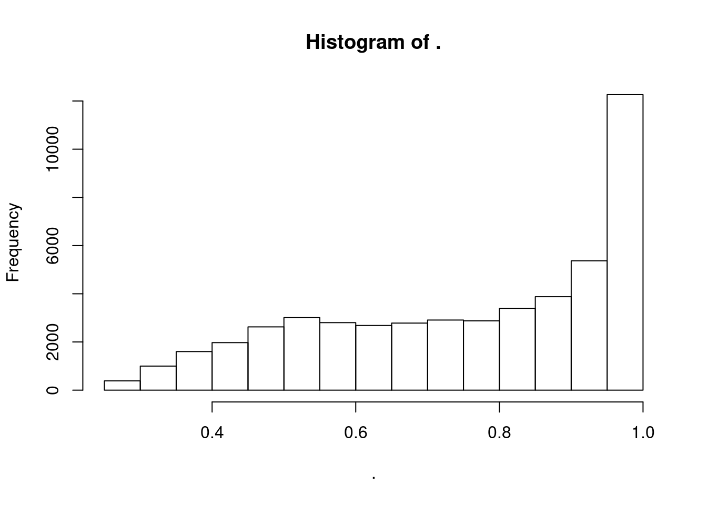
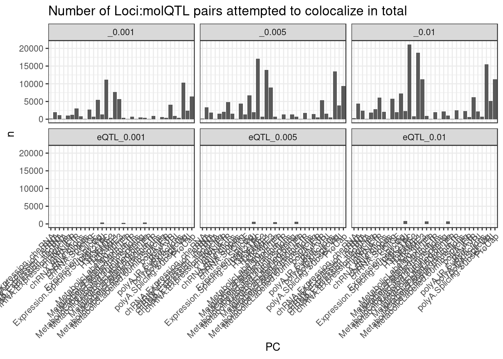
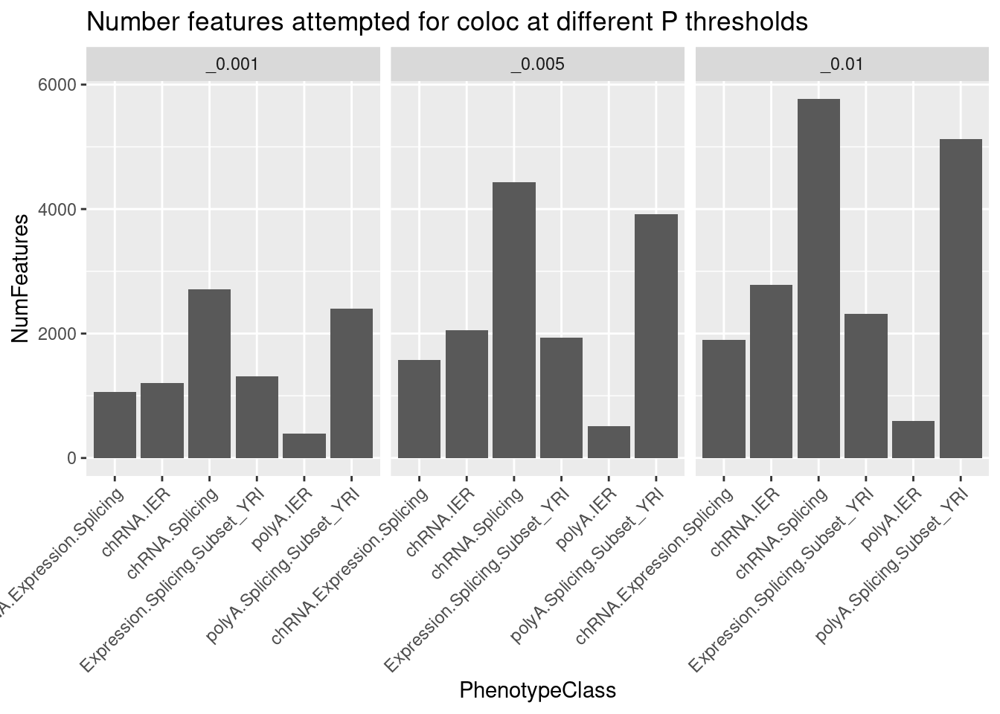
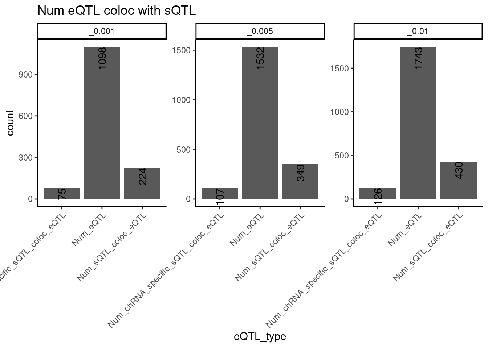

Last updated: 2022-06-08
Checks: 6 1
Knit directory: ChromatinSplicingQTLs/analysis/
This reproducible R Markdown analysis was created with workflowr (version 1.5.0). The Checks tab describes the reproducibility checks that were applied when the results were created. The Past versions tab lists the development history.
The R Markdown file has unstaged changes. To know which version of the R Markdown file created these results, you’ll want to first commit it to the Git repo. If you’re still working on the analysis, you can ignore this warning. When you’re finished, you can run wflow_publish to commit the R Markdown file and build the HTML.
Great job! The global environment was empty. Objects defined in the global environment can affect the analysis in your R Markdown file in unknown ways. For reproduciblity it’s best to always run the code in an empty environment.
The command set.seed(20191126) was run prior to running the code in the R Markdown file. Setting a seed ensures that any results that rely on randomness, e.g. subsampling or permutations, are reproducible.
Great job! Recording the operating system, R version, and package versions is critical for reproducibility.
Nice! There were no cached chunks for this analysis, so you can be confident that you successfully produced the results during this run.
Great job! Using relative paths to the files within your workflowr project makes it easier to run your code on other machines.
Great! You are using Git for version control. Tracking code development and connecting the code version to the results is critical for reproducibility. The version displayed above was the version of the Git repository at the time these results were generated.
Note that you need to be careful to ensure that all relevant files for the analysis have been committed to Git prior to generating the results (you can use wflow_publish or wflow_git_commit). workflowr only checks the R Markdown file, but you know if there are other scripts or data files that it depends on. Below is the status of the Git repository when the results were generated:
Ignored files:
Ignored: .DS_Store
Ignored: .Rhistory
Ignored: .Rproj.user/
Ignored: analysis/.20220606_PlotColocsForIntuitions.Rmd.swp
Ignored: analysis/.Rhistory
Ignored: code/.DS_Store
Ignored: code/.RData
Ignored: code/._.DS_Store
Ignored: code/._README.md
Ignored: code/._report.html
Ignored: code/.ipynb_checkpoints/
Ignored: code/.snakemake/
Ignored: code/Alignments/
Ignored: code/ENCODE/
Ignored: code/ExpressionAnalysis/
Ignored: code/FastqFastp/
Ignored: code/FastqFastpSE/
Ignored: code/Genotypes/
Ignored: code/IntronSlopes/
Ignored: code/Misc/
Ignored: code/MiscCountTables/
Ignored: code/Multiqc/
Ignored: code/Multiqc_chRNA/
Ignored: code/PeakCalling/
Ignored: code/Phenotypes/
Ignored: code/PlotGruberQTLs/
Ignored: code/PlotQTLs/
Ignored: code/ProCapAnalysis/
Ignored: code/QC/
Ignored: code/QTLs/
Ignored: code/ReferenceGenome/
Ignored: code/Rplots.pdf
Ignored: code/Session.vim
Ignored: code/SplicingAnalysis/
Ignored: code/TODO
Ignored: code/Tehranchi/
Ignored: code/bigwigs/
Ignored: code/bigwigs_FromNonWASPFilteredReads/
Ignored: code/config/.DS_Store
Ignored: code/config/._.DS_Store
Ignored: code/config/.ipynb_checkpoints/
Ignored: code/debug.ipynb
Ignored: code/debug_python.ipynb
Ignored: code/deepTools/
Ignored: code/featureCounts/
Ignored: code/gwas_summary_stats/
Ignored: code/hyprcoloc/
Ignored: code/igv_session.xml
Ignored: code/log
Ignored: code/logs/
Ignored: code/notebooks/.ipynb_checkpoints/
Ignored: code/rules/.ipynb_checkpoints/
Ignored: code/rules/OldRules/
Ignored: code/rules/notebooks/
Ignored: code/scratch/
Ignored: code/scripts/.ipynb_checkpoints/
Ignored: code/scripts/GTFtools_0.8.0/
Ignored: code/scripts/liftOverBedpe/liftOverBedpe.py
Ignored: code/snakemake.log
Ignored: code/snakemake.sbatch.log
Ignored: data/.DS_Store
Ignored: data/._.DS_Store
Ignored: data/._20220414203249_JASPAR2022_combined_matrices_25818_jaspar.txt
Ignored: data/._ColorsForPhenotypes.xlsx
Ignored: data/GWAS_catalog_summary_stats_sources/._list_gwas_summary_statistics_6_Apr_2022-10.csv
Ignored: data/GWAS_catalog_summary_stats_sources/._list_gwas_summary_statistics_6_Apr_2022-11.csv
Ignored: data/GWAS_catalog_summary_stats_sources/._list_gwas_summary_statistics_6_Apr_2022-2.csv
Ignored: data/GWAS_catalog_summary_stats_sources/._list_gwas_summary_statistics_6_Apr_2022-3.csv
Ignored: data/GWAS_catalog_summary_stats_sources/._list_gwas_summary_statistics_6_Apr_2022-4.csv
Ignored: data/GWAS_catalog_summary_stats_sources/._list_gwas_summary_statistics_6_Apr_2022-5.csv
Ignored: data/GWAS_catalog_summary_stats_sources/._list_gwas_summary_statistics_6_Apr_2022-6.csv
Ignored: data/GWAS_catalog_summary_stats_sources/._list_gwas_summary_statistics_6_Apr_2022-7.csv
Ignored: data/GWAS_catalog_summary_stats_sources/._list_gwas_summary_statistics_6_Apr_2022-8.csv
Ignored: data/GWAS_catalog_summary_stats_sources/._list_gwas_summary_statistics_6_Apr_2022.csv
Untracked files:
Untracked: code/snakemake_profiles/slurm/__pycache__/
Unstaged changes:
Modified: analysis/20220606_PlotColocsForIntuitions.Rmd
Modified: code/scripts/GenometracksByGenotype
Note that any generated files, e.g. HTML, png, CSS, etc., are not included in this status report because it is ok for generated content to have uncommitted changes.
These are the previous versions of the R Markdown and HTML files. If you’ve configured a remote Git repository (see ?wflow_git_remote), click on the hyperlinks in the table below to view them.
| File | Version | Author | Date | Message |
|---|---|---|---|---|
| Rmd | 9c30891 | Benjmain Fair | 2022-06-08 | update hhyprcoloc output |
In a previous notebook I explored the genewise hyprcoloc output, and noted that 30min and 60min 4sU colocalize (with all default parameters/thresholds) 80% of the time that they are tested. I expect this to be closer to 100%, and we should get similarly high colocalization with eQTL from polyA RNA-seq. Perhaps just by filtering for colocalizations above some threshold we can get more believable results. I could/should technically re-run hyprcoloc with different parameters, but before I do that, to understand the results better, let’s see how these colocalization rates change after filter for different posterior probabilities for colocalization.
library(tidyverse)── Attaching packages ─────────────────────────────────────── tidyverse 1.2.1 ──✔ ggplot2 3.2.1 ✔ purrr 0.3.3
✔ tibble 3.0.4 ✔ dplyr 1.0.2
✔ tidyr 1.1.2 ✔ stringr 1.4.0
✔ readr 1.4.0 ✔ forcats 0.5.0── Conflicts ────────────────────────────────────────── tidyverse_conflicts() ──
✖ dplyr::filter() masks stats::filter()
✖ dplyr::lag() masks stats::lag()library(viridis)Loading required package: viridisLitelibrary(gplots)
Attaching package: 'gplots'The following object is masked from 'package:stats':
lowesslibrary(data.table)
Attaching package: 'data.table'The following objects are masked from 'package:dplyr':
between, first, lastThe following object is masked from 'package:purrr':
transposelibrary(qvalue)
# library(purrr)
sample_n_of <- function(data, size, ...) {
dots <- quos(...)
group_ids <- data %>%
group_by(!!! dots) %>%
group_indices()
sampled_groups <- sample(unique(group_ids), size)
data %>%
filter(group_ids %in% sampled_groups)
}
dat <- Sys.glob("../code/hyprcoloc/Results/ForColoc/MolColocTest*_*/results.txt.gz") %>%
setNames(str_replace(., "../code/hyprcoloc/Results/ForColoc/MolColocTest(.*?)_(.+?)/results.txt.gz", "\\1_0.\\2")) %>%
lapply(read_tsv) %>%
bind_rows(.id="Threshold")
── Column specification ────────────────────────────────────────────────────────
cols(
GeneLocus = col_character(),
HyprcolocIteration = col_double(),
PosteriorColocalizationPr = col_double(),
RegionalAssociationPr = col_double(),
TopCandidateSNP = col_character(),
ProportionPosteriorPrExplainedByTopSNP = col_double(),
Trait = col_character()
)
── Column specification ────────────────────────────────────────────────────────
cols(
GeneLocus = col_character(),
HyprcolocIteration = col_double(),
PosteriorColocalizationPr = col_double(),
RegionalAssociationPr = col_double(),
TopCandidateSNP = col_character(),
ProportionPosteriorPrExplainedByTopSNP = col_double(),
Trait = col_character()
)
── Column specification ────────────────────────────────────────────────────────
cols(
GeneLocus = col_character(),
HyprcolocIteration = col_double(),
PosteriorColocalizationPr = col_double(),
RegionalAssociationPr = col_double(),
TopCandidateSNP = col_character(),
ProportionPosteriorPrExplainedByTopSNP = col_double(),
Trait = col_character()
)
── Column specification ────────────────────────────────────────────────────────
cols(
GeneLocus = col_character(),
HyprcolocIteration = col_double(),
PosteriorColocalizationPr = col_double(),
RegionalAssociationPr = col_double(),
TopCandidateSNP = col_character(),
ProportionPosteriorPrExplainedByTopSNP = col_double(),
Trait = col_character()
)
── Column specification ────────────────────────────────────────────────────────
cols(
GeneLocus = col_character(),
HyprcolocIteration = col_double(),
PosteriorColocalizationPr = col_double(),
RegionalAssociationPr = col_double(),
TopCandidateSNP = col_character(),
ProportionPosteriorPrExplainedByTopSNP = col_double(),
Trait = col_character()
)
── Column specification ────────────────────────────────────────────────────────
cols(
GeneLocus = col_character(),
HyprcolocIteration = col_double(),
PosteriorColocalizationPr = col_double(),
RegionalAssociationPr = col_double(),
TopCandidateSNP = col_character(),
ProportionPosteriorPrExplainedByTopSNP = col_double(),
Trait = col_character()
)PeaksToTSS <- Sys.glob("../code/Misc/PeaksClosestToTSS/*_assigned.tsv.gz") %>%
setNames(str_replace(., "../code/Misc/PeaksClosestToTSS/(.+?)_assigned.tsv.gz", "\\1")) %>%
lapply(read_tsv) %>%
bind_rows(.id="ChromatinMark") %>%
mutate(GenePeakPair = paste(gene, peak, sep = ";")) %>%
distinct(ChromatinMark, peak, gene, .keep_all=T)
── Column specification ────────────────────────────────────────────────────────
cols(
chrom = col_character(),
TSS_start = col_double(),
gene = col_character(),
strand = col_character(),
peak = col_character(),
distance = col_double()
)
── Column specification ────────────────────────────────────────────────────────
cols(
chrom = col_character(),
TSS_start = col_double(),
gene = col_character(),
strand = col_character(),
peak = col_character(),
distance = col_double()
)
── Column specification ────────────────────────────────────────────────────────
cols(
chrom = col_character(),
TSS_start = col_double(),
gene = col_character(),
strand = col_character(),
peak = col_character(),
distance = col_double()
)dat %>%
distinct(Threshold, GeneLocus, TopCandidateSNP, .keep_all = T) %>%
pull(PosteriorColocalizationPr) %>% hist()
dat %>%
separate(Trait, into=c("PC", "P"), sep=";") %>%
pull(PC) %>% unique() %>% sort() [1] "chRNA.Expression_cheRNA" "chRNA.Expression_eRNA"
[3] "chRNA.Expression_lncRNA" "chRNA.Expression_snoRNA"
[5] "chRNA.Expression.Splicing" "chRNA.IER"
[7] "chRNA.IR" "chRNA.IRjunctions"
[9] "chRNA.Slopes" "chRNA.Splicing"
[11] "CTCF" "Expression.Splicing"
[13] "Expression.Splicing.Subset_YRI" "H3K27AC"
[15] "H3K36ME3" "H3K4ME1"
[17] "H3K4ME3" "MetabolicLabelled.30min"
[19] "MetabolicLabelled.30min.IER" "MetabolicLabelled.30min.IR"
[21] "MetabolicLabelled.30min.IRjunctions" "MetabolicLabelled.30min.Splicing"
[23] "MetabolicLabelled.60min" "MetabolicLabelled.60min.IER"
[25] "MetabolicLabelled.60min.IR" "MetabolicLabelled.60min.IRjunctions"
[27] "MetabolicLabelled.60min.Splicing" "polyA.IER"
[29] "polyA.IR" "polyA.IR.Subset_YRI"
[31] "polyA.IRjunctions" "polyA.Splicing"
[33] "polyA.Splicing.Subset_YRI" "ProCap" dat %>%
separate(Trait, into=c("PC", "P"), sep=";") %>%
count(Threshold, PC) %>%
ggplot(aes(x=PC, y=n)) +
geom_col() +
facet_wrap(~Threshold) +
theme_bw() +
labs(title = "Number of Loci:molQTL pairs attempted to colocalize in total") +
theme(axis.text.x = element_text(angle = 45, vjust = 1, hjust=1))
Carlos wants to know: - how many sQTL and irQTLs coloc with polyA eQTLs? And how many coloc with polyA eQTL but not polyA sQTL?
dat.forcarlos <- dat %>%
filter(!str_detect(Threshold, "eQTL")) %>%
separate(Trait, into=c("PC", "P"), sep=";", remove = F) %>%
# pull(PC) %>% unique()
filter(PC %in% c("Expression.Splicing.Subset_YRI", "polyA.Splicing.Subset_YRI", "polyA.IER", "chRNA.Expression.Splicing", "chRNA.Splicing", "chRNA.IER"))
dat.forcarlos %>%
count(PC, Threshold) %>%
ggplot(aes(x=PC, y=n)) +
geom_col() +
facet_wrap(~Threshold) +
labs(title="Number features attempted for coloc at different P thresholds", y="NumFeatures", x="PhenotypeClass") +
theme(axis.text.x=element_text(angle=45, hjust=1))
dat.forcarlos %>%
filter(!is.na(TopCandidateSNP)) %>%
group_by(GeneLocus, TopCandidateSNP, Threshold) %>%
mutate(Contains_eQTL = any(PC == "Expression.Splicing.Subset_YRI")) %>%
mutate(Contains_sQTL = any(PC %in% c("polyA.Splicing.Subset_YRI", "polyA.IER", "chRNA.Splicing", "chRNA.IER"))) %>%
mutate(Contains_chRNA_specific_sQTL = any(PC %in% c("chRNA.Splicing", "chRNA.IER"))
& !any(PC %in% c("polyA.Splicing.Subset_YRI", "polyA.IER"))) %>%
ungroup() %>%
distinct(Threshold, GeneLocus, TopCandidateSNP, .keep_all=T) %>%
filter(Contains_eQTL) %>%
group_by(Threshold) %>%
summarise(
Num_eQTL = sum(Contains_eQTL),
Num_sQTL_coloc_eQTL = sum(Contains_sQTL),
Num_chRNA_specific_sQTL_coloc_eQTL = sum(Contains_chRNA_specific_sQTL)
) %>%
gather(key="eQTL_type", value="count", -Threshold) %>%
ggplot(aes(x=eQTL_type, y=count)) +
geom_col() +
geom_text(aes(label=count), color="black", angle=90, hjust=1) +
facet_wrap(~Threshold, scales="free_y") +
labs(title="Num eQTL coloc with sQTL") +
theme_classic() +
theme(axis.text.x=element_text(angle=45, hjust=1))`summarise()` ungrouping output (override with `.groups` argument)
Below is some code for making files, and then some code for running my script to plot some colocalizations. I will plot 5 loci where metabolic labelled samples did not coloc, 5 where they did, 5 where promoterQTL/eQTL coloc, 5 where non-promoter QTL coloc, 5 where sQTL/eQTL coloc, and 5 where sQTL/eQTL don’t coloc.
dat.ToPlotColocs <- dat %>%
filter(Threshold == "_0.001") %>%
separate(Trait, into=c("PC", "P"), sep=";", remove = F) %>%
left_join(PeaksToTSS %>% select(ChromatinMark, peak, gene), by=c("PC"="ChromatinMark", "P"="peak")) %>%
mutate( PC = case_when(
gene == GeneLocus ~ paste(PC, "AtPromoter" ,sep="_"),
!is.na(gene) ~ paste(PC, "AtDistalPromoter" ,sep="_"),
TRUE ~ PC
) )
# both metabolic coloc
Targets <- dat.ToPlotColocs %>%
filter(!is.na(TopCandidateSNP)) %>%
group_by(GeneLocus, TopCandidateSNP) %>%
filter(any(str_detect(PC, "MetabolicLabelled.30min")) & any(str_detect(PC, "MetabolicLabelled.60min"))) %>%
ungroup() %>%
pull(GeneLocus) %>% unique()
dat.ToPlotColocs %>%
filter(Threshold == "_0.001") %>%
filter(PC %in% c("MetabolicLabelled.30min", "MetabolicLabelled.60min", "Expression.Splicing.Subset_YRI", "H3K27AC", "H3K27AC_AtPromoter", "H3K27AC_AtDistalPromoter")) %>%
filter(GeneLocus %in% Targets) %>%
sample_n_of(10, GeneLocus) %>%
select(-Threshold) %>%
write_tsv("scratch/ColocExamples/GroupMetabolicColoc.tsv")
# metabolic don't coloc
Targets <- dat.ToPlotColocs %>%
filter(PC %in% c("MetabolicLabelled.30min", "MetabolicLabelled.60min")) %>%
group_by(GeneLocus) %>%
filter(any(str_detect(PC, "MetabolicLabelled.30min")) & any(str_detect(PC, "MetabolicLabelled.60min"))) %>%
ungroup() %>%
group_by(GeneLocus, TopCandidateSNP) %>%
filter(
(is.na(TopCandidateSNP) & PC %in% c("MetabolicLabelled.30min", "MetabolicLabelled.60min")) | (sum(str_detect(PC, "MetabolicLabelled")) == 1)
) %>%
ungroup() %>%
pull(GeneLocus) %>% unique()
Targets <- dat.ToPlotColocs %>%
filter(GeneLocus %in% TestedTargets) %>%
filter(is.na(TopCandidateSNP))
dat.ToPlotColocs %>%
filter(Threshold == "_0.001") %>%
filter(PC %in% c("MetabolicLabelled.30min", "MetabolicLabelled.60min", "Expression.Splicing.Subset_YRI", "H3K27AC", "H3K27AC_AtPromoter", "H3K27AC_AtDistalPromoter")) %>%
filter(GeneLocus %in% Targets) %>%
sample_n_of(10, GeneLocus) %>%
select(-Threshold) %>%
write_tsv("scratch/ColocExamples/GroupMetabolicNotColoc.tsv")
# Promoter and eqtl coloc TODO
Targets <- dat.ToPlotColocs %>%
filter(PC %in% c("MetabolicLabelled.30min", "MetabolicLabelled.60min", "Expression.Splicing.Subset_YRI", "H3K27AC", "H3K27AC_AtPromoter", "H3K27AC_AtDistalPromoter")) %>%
filter(!is.na(TopCandidateSNP)) %>%
group_by(GeneLocus, TopCandidateSNP) %>%
filter(any(PC == "Expression.Splicing.Subset_YRI") & any(PC == "H3K27AC_AtPromoter")) %>%
ungroup() %>%
pull(GeneLocus) %>% unique()
dat.ToPlotColocs %>%
filter(Threshold == "_0.001") %>%
filter(PC %in% c("MetabolicLabelled.30min", "MetabolicLabelled.60min", "Expression.Splicing.Subset_YRI", "H3K27AC", "H3K27AC_AtPromoter", "H3K27AC_AtDistalPromoter")) %>%
filter(GeneLocus %in% Targets) %>%
sample_n_of(10, GeneLocus) %>%
select(-Threshold) %>%
write_tsv("scratch/ColocExamples/GroupPromoterEqtlColoc.tsv")
# Promoter and eqtl don't coloc
Targets <- dat.ToPlotColocs %>%
filter(PC %in% c("MetabolicLabelled.30min", "MetabolicLabelled.60min", "Expression.Splicing.Subset_YRI", "H3K27AC", "H3K27AC_AtPromoter", "H3K27AC_AtDistalPromoter")) %>%
filter(!is.na(TopCandidateSNP)) %>%
group_by(GeneLocus, TopCandidateSNP) %>%
filter(any(PC == "Expression.Splicing.Subset_YRI") & any(PC == "H3K27AC_AtPromoter")) %>%
ungroup() %>%
pull(GeneLocus) %>% unique()
dat.ToPlotColocs %>%
filter(Threshold == "_0.001") %>%
filter(PC %in% c("MetabolicLabelled.30min", "MetabolicLabelled.60min", "Expression.Splicing.Subset_YRI", "H3K27AC", "H3K27AC_AtPromoter", "H3K27AC_AtDistalPromoter")) %>%
filter(GeneLocus %in% Targets) %>%
sample_n_of(10, GeneLocus) %>%
select(-Threshold) %>%
write_tsv("scratch/ColocExamples/GroupPromoterEqtlColoc.tsv")
dat %>%
count(Threshold, GeneLocus) %>%
ggplot(aes(x=n, color=Threshold)) +
stat_ecdf() +
coord_cartesian(xlim=c(0,10)) +
theme_bw()
dat.tidy
dat %>%
filter(Threshold == "_0.01") %>%
select(-Threshold) %>%
# add_count(GeneLocus, TopCandidateSNP) %
) %>%
write_tsv("../code/scratch/TestHyprcolocPlots.tsv")conda activate r_essentials
echo "hello world"
sessionInfo()R version 3.4.3 (2017-11-30)
Platform: x86_64-pc-linux-gnu (64-bit)
Running under: Scientific Linux 7.4 (Nitrogen)
Matrix products: default
BLAS/LAPACK: /software/openblas-0.2.19-el7-x86_64/lib/libopenblas_haswellp-r0.2.19.so
locale:
[1] LC_CTYPE=en_US.UTF-8 LC_NUMERIC=C
[3] LC_TIME=en_US.UTF-8 LC_COLLATE=en_US.UTF-8
[5] LC_MONETARY=en_US.UTF-8 LC_MESSAGES=en_US.UTF-8
[7] LC_PAPER=en_US.UTF-8 LC_NAME=C
[9] LC_ADDRESS=C LC_TELEPHONE=C
[11] LC_MEASUREMENT=en_US.UTF-8 LC_IDENTIFICATION=C
attached base packages:
[1] stats graphics grDevices utils datasets methods base
other attached packages:
[1] qvalue_2.10.0 data.table_1.12.8 gplots_3.0.1 viridis_0.5.1
[5] viridisLite_0.3.0 forcats_0.5.0 stringr_1.4.0 dplyr_1.0.2
[9] purrr_0.3.3 readr_1.4.0 tidyr_1.1.2 tibble_3.0.4
[13] ggplot2_3.2.1 tidyverse_1.2.1
loaded via a namespace (and not attached):
[1] Rcpp_1.0.3 lubridate_1.7.9.2 gtools_3.5.0 assertthat_0.2.1
[5] rprojroot_1.3-2 digest_0.6.27 plyr_1.8.4 R6_2.4.1
[9] cellranger_1.1.0 backports_1.1.5 evaluate_0.14 httr_1.4.2
[13] pillar_1.4.7 rlang_0.4.9 lazyeval_0.2.2 readxl_1.3.1
[17] rstudioapi_0.10 gdata_2.18.0 whisker_0.3-2 rmarkdown_2.6
[21] labeling_0.3 splines_3.4.3 munsell_0.5.0 broom_0.7.3
[25] compiler_3.4.3 httpuv_1.5.2 modelr_0.1.8 xfun_0.20
[29] pkgconfig_2.0.3 htmltools_0.4.0 tidyselect_1.1.0 gridExtra_2.3
[33] workflowr_1.5.0 fansi_0.4.0 crayon_1.3.4 withr_2.1.2
[37] later_1.0.0 bitops_1.0-6 grid_3.4.3 jsonlite_1.6
[41] gtable_0.3.0 lifecycle_0.2.0 git2r_0.26.1 magrittr_1.5
[45] scales_1.1.0 KernSmooth_2.23-15 cli_2.0.0 stringi_1.4.3
[49] farver_2.0.1 reshape2_1.4.3 fs_1.3.1 promises_1.1.0
[53] xml2_1.2.0 ellipsis_0.3.0 generics_0.1.0 vctrs_0.3.6
[57] tools_3.4.3 glue_1.4.2 hms_0.5.3 yaml_2.2.0
[61] colorspace_2.0-0 caTools_1.17.1 rvest_0.3.6 knitr_1.26
[65] haven_2.3.1